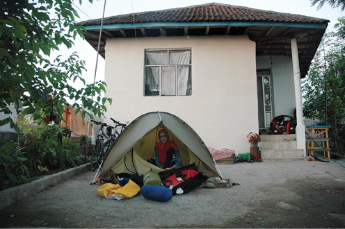
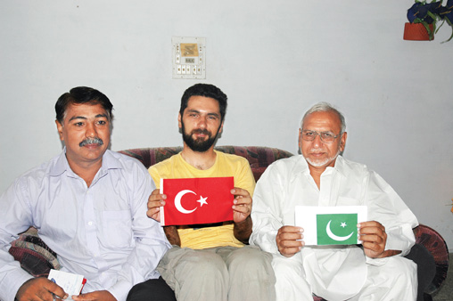

PAKİSTAN, 29 Temmuz

141 İran, Astara
Misafir umduğu yerde değil, bulduğu yerde uyur.
Pakistan’da devlet binaları ne kadar ihtişamlı ve büyük görünüyorsa evler de o kadar küçük, yıkık ve bakımsız. Yine sıcak havada ve ter içinde ilerlerken bir araba yanaşıyor. Dondurma dolu olsa ne güzel olurdu şu aracın içi. Yanımızda bitiveren jeep o kadar yeni, pahalı, parlak ve cilalı ki polis arabası olması bizi şaşırtıyor. Tank gibi bir şey. Dondurmacı hayal ederken ne çıktı karşımıza. Türkiye’de görmediğim bir jeep, pikap karışımı. Sürücü sağda oturduğu için soldaki camı rahat rahat açan adamla göz göze geliyoruz.
Gözüm polisin apoletlerine takılıyor. Bizdeki komiser hatta emniyet müdürü seviyesinde olmalı. İslamabat’da bize yardımcı olan polis arabasını hatırlıyorum, belki aynı kişiler olabilir içinde. Sonradan adının Seyid olduğunu öğreneceğimiz müdür, belki de arabadan kaynaklanan sesi bastırmak için bağırarak kenara çekmemizi istiyor.
Açıkçası bu sert görünüşlü, esmer adamdan korkuyorum en başta. Hemen kenara çekiyoruz. Tam bu sırada, asfalttan toprağa indiğimizde, arka lastiğim kim bilir kaçıncı kez tekrar patlıyor. Nereden çıktı şimdi bu! Al işte, bir lastik daha gitti. Ne güzel, az çok asfalta benzeyen yolda gidiyorduk.
Jeep de kenara yanaşıyor. Sohbete başlıyoruz. Ayaküstü yemek yenebilecek, çay içilebilecek bir yerdeyiz. Türkiye’den geldiğimizi öğrenmek muhabbetin koyulaşması için yeterli. Garip bir şekilde Seyid’in İngilizcesini çok güzel anlıyorum. Çünkü o da benim kadar konuşabiliyor. Şoförün tavırlarına bakılırsa, Seyid epeyce rütbeli bir memur.
Nereden, nasıl geldik gibi klasik konuları konuşurken bizi evine davet ediyor. Cüzdanından çıkarıp çocuklarının fotoğraflarını gösteriyor. İki kızı var. Aslında tanıdık bir coğrafyada, bildik bir kültürün içindeyiz. Seyid’in çocuklarının adı Azime ve Fatma. Biz “kardeş ülkelerdeniz” diyor.
Ayaküstü bunları konuştuktan sonra İnci’yle göz göze geliyoruz, gidelim diye işaret ediyor başıyla İnci.
Israrlarımız işe yaramayacak zaten. “Bütün yol benim sorumluluğumda” diyor Seyid. Gülerek ekliyor. “Gelmezseniz yarın sizi yolda tekrar bulurum. Bu sefer tekrar geriye doğru benim eve sürmeniz gerekir.” Her ne kadar buradaki polise elbette güvenebileceğimizi bilsem ve elden geldiği kadar samimi davransam da beden dilim çekingenliğimi belli ediyor olmalı.
Seyid benim telefonumdan eşiyle konuşuyor. Telefonu bana da veriyor. Eşi de bizi beklediklerini söylüyor. Gelmemiz için rica ediyor. Endişelerimizi gidermek ve güven kazanmak için böyle yaptığını anlıyorum.
Ben lastiği sökmeye çalışırken Seyid jeepiyle uzaklaşıyor.

Pakistan, Seyit Komserin evi.
Sadece bayraklar değil, misafirperverlik en büyük ortak paydamız.